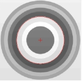

卡尺工具的边缘属性有9种，最佳边缘、第一条边缘、最后一条边缘、整体最亮边缘、整体最暗边缘、亮侧最亮边缘、亮侧最暗边缘、暗侧最亮边缘和暗侧最暗边缘。
找圆工具主要是在指定的ROI区域内对实际工件的圆边缘进行拟合，获取圆边缘的解析式。一般与定位工具配合使用，根据边缘极性等参数实现高精度找圆。其实际应用效果如图1所示。
与找线工具原理类似，找圆工具通过查找区域内卡尺参数的设置，寻找查找区域内的图像边缘点，然后对找到的边缘点进行圆拟合，从而寻找到一个目标圆，如下图所示。
找圆工具的应用场景可以分为以下三个
输入图像：待检测的图像
二维线性变换：该参数一般来源于定位工具，其表示为当前图像中的目标特征相对于模板图像中对应特征的平移、旋转、缩放变换。实时在线检测时，可通过该参数不断调整找线工具的查找区域。
重点参数说明如下，其余参数可参考“5.参数说明”。
单边缘和双边缘模式实际应用如图2和图3所示，采用单边缘模式时，其找圆结果如图2(b)中的红色曲线所示；若采用双边缘模式，卡尺摆放如图3(a)所示，卡尺的查找区域中包含两条边缘，找圆结果为这两条边缘(图3(b)中绿色直线)的中线，如图3(b)中的红色曲线所示。
卡尺的边缘极性是根据图像边缘的灰度级过渡形式来确定的。如图4所示，沿着卡尺Y轴正方向(红色箭头所指的方向)，图像边缘的灰度级过渡形式如果是从亮到暗，则边缘极性选择亮到暗，反之选择暗到亮，如果图像边缘的灰度级过渡形式不确定时选择任意极性。
如图5所示，其中红色十字点为局外点，局外点是不参与拟合的。其中局外点所占比例称为局外点比例，图5中局外点比例为0.2。一般在边缘干扰过大时，需要设置局外点比例。
一般对于多边缘图像，需要设置合适的边缘属性。
最佳边缘：在查找区域内，图像边缘相邻两侧灰度值相差最大的边缘； 第一条边缘：在查找区域内，沿着卡尺Y轴的正方向，符合边缘极性的第一条图像边缘； 最后一条边缘：在查找区域内，沿着卡尺Y轴的正方向，符合边缘极性的最后一条图像边缘；
整体最亮边缘：在查找区域内，图像边缘两侧亮度平均值（灰度值平均值最大）的边缘； 整体最暗边缘：在查找区域内，图像边缘两侧亮度平均值（灰度值平均值最小）的边缘； 亮侧最亮边缘：在查找区域内，图像边缘亮侧最亮（亮侧灰度值最大）的边缘； 亮侧最暗边缘：在查找区域内，图像边缘亮侧最暗（亮侧灰度值最小）的边缘； 暗侧最亮边缘：在查找区域内，图像边缘暗侧最亮（暗侧灰度值最大）的边缘； 暗侧最暗边缘：在查找区域内，图像边缘暗侧最暗（暗侧灰度值最小）的边缘。
选择双边缘模式时，边缘属性中的整体最亮边缘、整体最暗边缘、亮侧最亮边缘、亮侧最暗边缘、暗侧最亮边缘以及暗侧最暗边缘按最佳边缘处理。当查找范围为整个图像区域，边缘模式为单边缘，边缘极性设置为任意极性，选择不同的边缘属性时，其对应的找圆结果如图6所示。

找圆工具增加了对检测结果（包括圆心、半径）的判定功能，用户可开启或关闭对应检测结果的判定功能。当检测结果超出设置的上下限阈值时，判定工具运行失败，用户可根据此时工具的运行结果进行后续处理操作。如图7所示。
找圆工具增加了对检测边缘像素的灰度约束，只有图像中点的像素灰度值在【最小约束，最大约束】之间的时候才有可能被认为是探测点，否则就是干扰或者是背景，不会作为拟合圆的探测点，从而提升找圆正确率。其中边缘一的约束一直存在，当打开双边缘模式之后边缘二的约束会出现，范围为：【0，最小约束，最大约束，255】。如图8所示。
| 现象描述 | 解决方法 |
|---|---|
| 找圆ROI不能设置掩膜 | 查看属性栏参数“掩膜模式”是否选择“是”，选择“是”时才可以设置掩膜。 |
| 找圆ROI不能设置卡尺参数 | 查看属性栏参数“手动模式”是否选择“是”，选择“是”时才可以设置卡尺参数。 |
| 找圆失败 | 1. 查找失败。可根据输出窗口错误栏的错误提示，修改对比度阈值、局外点比例等参数。 2. 判定失败。圆心、半径判定上下限阈值设置不合理，可根据实际情况修改其上下限阈值。 |
| 参数名称 | 参数描述 |
|---|---|
| 输入图像 | 输入图像宽度、高度、像素大小，同图像窗口的输入图像参数。 |
| 二维线性变换 | 目标相对于模板的平移、旋转、缩放变换。 |
| 边缘模式 | 找圆工具的边缘模式有2种，单边缘和双边缘。 |
| 边缘极性 | 边缘极性是指图像边缘灰度级的过渡形式，分为3种，任意极性、亮到暗和暗到亮。 |
| 对比度阈值 | 卡尺工具默认只采用对比度评价分数，即按照边缘信号的强度来评分，输出边缘最强的点。对比度阈值的取值范围是0~255。 |
| 局外点比例 | 局外点就是偏离曲线较远的点。局外点比例即不参与直线拟合的点的比例，取值范围是0~0.5。 |
| 边缘属性 | 在查找区域内，卡尺根据不同的边缘属性，确定图像边缘的精确位置。 卡尺工具的边缘属性有9种，最佳边缘、第一条边缘、最后一条边缘、整体最亮边缘、整体最暗边缘、亮侧最亮边缘、亮侧最暗边缘、暗侧最亮边缘和暗侧最暗边缘。 |
| 启用全局最优拟合 | 是否启用全局最优拟合 |
| 半径约束值 | 范围[0.0，10000.0]，单位：像素，默认值0，默认不使用半径约束值且此参数只在开启全局最优拟合后有效。 |
| 半径公差 | 范围[0.0，10000.0]，单位：像素，默认值0，默认不使用半径约束值且此参数只在开启全局最优拟合后有效。另外当半径公差大于半径约束值时算法会自动进行范围校正。 |
| 启用重新评分 | 是否启用重新评分 |
| 允许减少局外点 | 是否允许减少局外点 |
| 掩膜模式 | 掩膜设置是指在模板训练过程中，屏蔽掉不参与模式训练的区域，减少参与模式训练的几何特征。 |
| 手动模式 | 选择“是”，支持手动设置卡尺参数，鼠标右键点击卡尺，在弹出的对话框中可以改变卡尺参数；选择“否”，不支持手动设置卡尺参数。 |
| 实时显示结果 | 选择“是”，在修改工具参数后，不需要运行工具，就可以实时显示结果；选择“否”，改变参数后需要运行工具才会显示对应的结果。 |
| 显示探测点 | 选择“是”，显示卡尺的探测点；选择“否”，不显示卡尺的探测点。其中局外点用红色标注，其余用绿色标注。 |
| 圆心X上限 | 测量结果质心位置坐标X的判断上限阈值，取值范围[0,999999.999999]， 且下限应小于等于上限。 |
| 圆心X下限 | 测量结果质心位置坐标X的判断下限阈值，取值范围[0,999999.999999]， 且下限应小于等于上限。 |
| 圆心Y上限 | 测量结果质心位置坐标Y的判断上限阈值，取值范围[0,999999.999999]， 且下限应小于等于上限。 |
| 圆心Y下限 | 测量结果质心位置坐标Y的判断下限阈值，取值范围[0,999999.999999]， 且下限应小于等于上限。 |
| 半径上限 | 测量结果直线绝对角度的判断上限阈值，取值范围(0,999999.999999]， 且下限应小于等于上限。 |
| 半径下限 | 测量结果直线绝对角度的判断下限阈值，取值范围(0,999999.999999]， 且下限应小于等于上限。 |
| 边缘一最小灰度约束 | 边缘一测量结果像素灰度值下限阈值，取值范围[0,255.000000]， 且下限应小于等于上限。 |
| 边缘一最大灰度约束 | 边缘一测量结果像素灰度值上限阈值，取值范围[0,255.000000]， 且下限应小于等于上限。 |
| 边缘二最小灰度约束 | 边缘二测量结果像素灰度值下限阈值，取值范围[0,255.000000]， 且下限应小于等于上限。（当开启双边缘时有效） |
| 边缘二最大灰度约束 | 边缘二测量结果像素灰度值上限阈值，取值范围[0,255.000000]， 且下限应小于等于上限。（当开启双边缘时有效） |
| 参数名称 | 参数描述 |
|---|---|
| 输入图像 | 输出图像宽度、高度、像素大小。 |
| 圆结果 | 输出圆结果的圆心和半径。 |
| 圆弧结果 | 输出圆结果的圆心、半径和角度。 |
| 圆心 | 圆或圆弧结果的圆心。 |
| 半径 | 圆或圆弧结果的半径。 |
| 参与拟合圆的点集 | 参与圆或圆弧拟合的点集，即除去局外点后的点集。 |
| 匹配分数值 | 圆或圆弧结果与实际图像的匹配程度，匹配分数值越接近1，圆或圆弧结果越准确。 |
| 执行结果 | 工具执行结果。 |
| 执行时间 | 工具执行时间。 |
参见“\Samples\形状间距及相关点.gvp”。